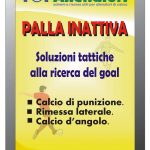
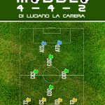
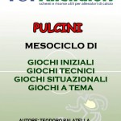
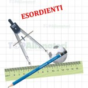
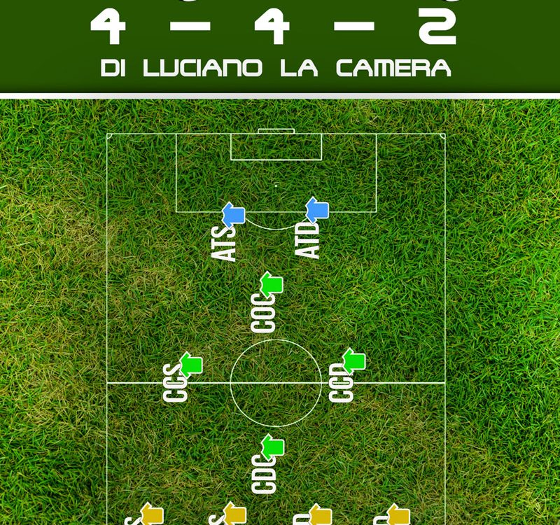

<!DOCTYPE html>
<html class="no-js" lang="it-IT" itemscope="itemscope" itemtype="https://schema.org/WebPage">
<!-- head -->

<!-- Mirrored from www.topallenatori.it/category/esercizi/page/31/ by HTTrack Website Copier/3.x [XR&CO'2014], Fri, 28 Mar 2025 08:56:29 GMT -->
<!-- Added by HTTrack --><meta http-equiv="content-type" content="text/html;charset=UTF-8" /><!-- /Added by HTTrack -->
<head>
<!-- meta -->
<meta charset="UTF-8" />
<meta name="viewport" content="width=device-width, initial-scale=1, maximum-scale=1">
<title itemprop="name">Esercizi | Topallenatori | Page 31</title>
<link rel="shortcut icon" href="../../../../wp-content/uploads/2015/08/fav.png" />	
<!-- wp_head() -->
<script>
//<![CDATA[
window.mfn_ajax = "../../../../wp-admin/admin-ajax.html";
window.mfn_nicescroll = 40;
window.mfn_prettyphoto = {style:"pp_default", width:0, height:0};
window.mfn_sliders = {blog:0, clients:0, offer:0, portfolio:0, shop:0, slider:0, testimonials:0};
window.mfn_retina_disable = 0;
//]]>
</script>
<link rel='dns-prefetch' href='http://www.google.com/' />
<link rel='dns-prefetch' href='http://fonts.googleapis.com/' />
<link rel='dns-prefetch' href='http://s.w.org/' />
<link rel="alternate" type="application/rss+xml" title="Topallenatori &raquo; Feed" href="../../../../feed/index.html" />
<link rel="alternate" type="application/rss+xml" title="Topallenatori &raquo; Feed dei commenti" href="../../../../comments/feed/index.html" />
<link rel="alternate" type="application/rss+xml" title="Topallenatori &raquo; Esercizi Feed della categoria" href="../../feed/index.html" />
<script type="text/javascript">
window._wpemojiSettings = {"baseUrl":"https:\/\/s.w.org\/images\/core\/emoji\/11\/72x72\/","ext":".png","svgUrl":"https:\/\/s.w.org\/images\/core\/emoji\/11\/svg\/","svgExt":".svg","source":{"concatemoji":"https:\/\/www.topallenatori.it\/wp-includes\/js\/wp-emoji-release.min.js?ver=4.9.26"}};
!function(e,a,t){var n,r,o,i=a.createElement("canvas"),p=i.getContext&&i.getContext("2d");function s(e,t){var a=String.fromCharCode;p.clearRect(0,0,i.width,i.height),p.fillText(a.apply(this,e),0,0);e=i.toDataURL();return p.clearRect(0,0,i.width,i.height),p.fillText(a.apply(this,t),0,0),e===i.toDataURL()}function c(e){var t=a.createElement("script");t.src=e,t.defer=t.type="text/javascript",a.getElementsByTagName("head")[0].appendChild(t)}for(o=Array("flag","emoji"),t.supports={everything:!0,everythingExceptFlag:!0},r=0;r<o.length;r++)t.supports[o[r]]=function(e){if(!p||!p.fillText)return!1;switch(p.textBaseline="top",p.font="600 32px Arial",e){case"flag":return s([55356,56826,55356,56819],[55356,56826,8203,55356,56819])?!1:!s([55356,57332,56128,56423,56128,56418,56128,56421,56128,56430,56128,56423,56128,56447],[55356,57332,8203,56128,56423,8203,56128,56418,8203,56128,56421,8203,56128,56430,8203,56128,56423,8203,56128,56447]);case"emoji":return!s([55358,56760,9792,65039],[55358,56760,8203,9792,65039])}return!1}(o[r]),t.supports.everything=t.supports.everything&&t.supports[o[r]],"flag"!==o[r]&&(t.supports.everythingExceptFlag=t.supports.everythingExceptFlag&&t.supports[o[r]]);t.supports.everythingExceptFlag=t.supports.everythingExceptFlag&&!t.supports.flag,t.DOMReady=!1,t.readyCallback=function(){t.DOMReady=!0},t.supports.everything||(n=function(){t.readyCallback()},a.addEventListener?(a.addEventListener("DOMContentLoaded",n,!1),e.addEventListener("load",n,!1)):(e.attachEvent("onload",n),a.attachEvent("onreadystatechange",function(){"complete"===a.readyState&&t.readyCallback()})),(n=t.source||{}).concatemoji?c(n.concatemoji):n.wpemoji&&n.twemoji&&(c(n.twemoji),c(n.wpemoji)))}(window,document,window._wpemojiSettings);
</script>
<style type="text/css">
img.wp-smiley,
img.emoji {
display: inline !important;
border: none !important;
box-shadow: none !important;
height: 1em !important;
width: 1em !important;
margin: 0 .07em !important;
vertical-align: -0.1em !important;
background: none !important;
padding: 0 !important;
}
</style>
<link rel='stylesheet' id='validate-engine-css-css'  href='../../../../wp-content/plugins/wysija-newsletters/css/validationEngine.jquery2aca.css?ver=2.13' type='text/css' media='all' />
<link rel='stylesheet' id='contact-form-7-css'  href='../../../../wp-content/plugins/contact-form-7/includes/css/styles6725.css?ver=5.1.7' type='text/css' media='all' />
<link rel='stylesheet' id='tp_twitter_plugin_css-css'  href='../../../../wp-content/plugins/recent-tweets-widget/tp_twitter_plugin5152.css?ver=1.0' type='text/css' media='screen' />
<link rel='stylesheet' id='rs-plugin-settings-css'  href='../../../../wp-content/plugins/revslider/public/assets/css/settings5bca.css?ver=5.0.4.1' type='text/css' media='all' />
<style id='rs-plugin-settings-inline-css' type='text/css'>
.tp-caption a{color:#ff7302;text-shadow:none;-webkit-transition:all 0.2s ease-out;-moz-transition:all 0.2s ease-out;-o-transition:all 0.2s ease-out;-ms-transition:all 0.2s ease-out}.tp-caption a:hover{color:#ffa902}
</style>
<link rel='stylesheet' id='cookie-consent-style-css'  href='../../../../wp-content/plugins/uk-cookie-consent/assets/css/style092c.css?ver=4.9.26' type='text/css' media='all' />
<link rel='stylesheet' id='wspsc-style-css'  href='../../../../wp-content/plugins/wordpress-simple-paypal-shopping-cart/wp_shopping_cart_stylecb95.css?ver=4.4.9' type='text/css' media='all' />
<link rel='stylesheet' id='style-css'  href='../../../../wp-content/themes/topallenatori/stylebf99.css?ver=9.3' type='text/css' media='all' />
<link rel='stylesheet' id='mfn-base-css'  href='../../../../wp-content/themes/topallenatori/css/basebf99.css?ver=9.3' type='text/css' media='all' />
<link rel='stylesheet' id='mfn-btn-css'  href='../../../../wp-content/themes/topallenatori/css/buttonsbf99.css?ver=9.3' type='text/css' media='all' />
<link rel='stylesheet' id='mfn-icons-css'  href='../../../../wp-content/themes/topallenatori/fonts/mfn-iconsbf99.css?ver=9.3' type='text/css' media='all' />
<link rel='stylesheet' id='mfn-grid-css'  href='../../../../wp-content/themes/topallenatori/css/gridbf99.css?ver=9.3' type='text/css' media='all' />
<link rel='stylesheet' id='mfn-layout-css'  href='../../../../wp-content/themes/topallenatori/css/layoutbf99.css?ver=9.3' type='text/css' media='all' />
<link rel='stylesheet' id='mfn-shortcodes-css'  href='../../../../wp-content/themes/topallenatori/css/shortcodesbf99.css?ver=9.3' type='text/css' media='all' />
<link rel='stylesheet' id='mfn-variables-css'  href='../../../../wp-content/themes/topallenatori/css/variablesbf99.css?ver=9.3' type='text/css' media='all' />
<link rel='stylesheet' id='mfn-style-simple-css'  href='../../../../wp-content/themes/topallenatori/css/style-simplebf99.css?ver=9.3' type='text/css' media='all' />
<link rel='stylesheet' id='mfn-animations-css'  href='../../../../wp-content/themes/topallenatori/js/animations/animations.minbf99.css?ver=9.3' type='text/css' media='all' />
<link rel='stylesheet' id='mfn-colorpicker-css'  href='../../../../wp-content/themes/topallenatori/js/colorpicker/css/colorpickerbf99.css?ver=9.3' type='text/css' media='all' />
<link rel='stylesheet' id='mfn-jquery-ui-css'  href='../../../../wp-content/themes/topallenatori/css/ui/jquery.ui.allbf99.css?ver=9.3' type='text/css' media='all' />
<link rel='stylesheet' id='mfn-jplayer-css'  href='../../../../wp-content/themes/topallenatori/css/jplayer/jplayer.blue.mondaybf99.css?ver=9.3' type='text/css' media='all' />
<link rel='stylesheet' id='mfn-prettyPhoto-css'  href='../../../../wp-content/themes/topallenatori/css/prettyPhotobf99.css?ver=9.3' type='text/css' media='all' />
<link rel='stylesheet' id='mfn-responsive-1240-css'  href='../../../../wp-content/themes/topallenatori/css/responsive-1240bf99.css?ver=9.3' type='text/css' media='all' />
<link rel='stylesheet' id='mfn-responsive-css'  href='../../../../wp-content/themes/topallenatori/css/responsivebf99.css?ver=9.3' type='text/css' media='all' />
<link rel='stylesheet' id='mfn-style-one-php-css'  href='../../../../wp-content/themes/topallenatori/style-onebf99.css?ver=9.3' type='text/css' media='all' />
<link rel='stylesheet' id='mfn-style-php-css'  href='../../../../wp-content/themes/topallenatori/stylebf99-2.css?ver=9.3' type='text/css' media='all' />
<link rel='stylesheet' id='Patua+One-css'  href='https://fonts.googleapis.com/css?family=Patua+One&amp;ver=4.9.26' type='text/css' media='all' />
<link rel='stylesheet' id='mfn-custom-css'  href='../../../../wp-content/themes/topallenatori/css/custombf99.css?ver=9.3' type='text/css' media='all' />
<script type='text/javascript' src='../../../../wp-includes/js/jquery/jqueryb8ff.js?ver=1.12.4'></script>
<script type='text/javascript' src='../../../../wp-includes/js/jquery/jquery-migrate.min330a.js?ver=1.4.1'></script>
<script type='text/javascript' src='../../../../wp-content/plugins/revslider/public/assets/js/jquery.themepunch.tools.min5bca.js?ver=5.0.4.1'></script>
<script type='text/javascript' src='../../../../wp-content/plugins/revslider/public/assets/js/jquery.themepunch.revolution.min5bca.js?ver=5.0.4.1'></script>
<script type='text/javascript' src='../../../../wp-content/plugins/right-click-disable-orignal/rightclickdisable092c.js?ver=4.9.26'></script>
<link rel='https://api.w.org/' href='../../../../wp-json/index.html' />
<link rel="EditURI" type="application/rsd+xml" title="RSD" href="../../../../xmlrpc0db0.php?rsd" />
<link rel="wlwmanifest" type="application/wlwmanifest+xml" href="../../../../wp-includes/wlwmanifest.xml" /> 
<meta name="generator" content="WordPress 4.9.26" />
<style id="ctcc-css" type="text/css" media="screen">
#catapult-cookie-bar {
box-sizing: border-box;
max-height: 0;
opacity: 0;
z-index: 99999;
overflow: hidden;
color: #dddddd;
position: fixed;
left: 0;
bottom: 0;
width: 100%;
background-color: #464646;
}
#catapult-cookie-bar a {
color: #dddddd;
}
#catapult-cookie-bar .x_close span {
background-color: ;
}
button#catapultCookie {
background:#45AE52;
color: ;
border: 0; padding: 6px 9px; border-radius: 3px;
}
#catapult-cookie-bar h3 {
color: #dddddd;
}
.has-cookie-bar #catapult-cookie-bar {
opacity: 1;
max-height: 999px;
min-height: 30px;
}</style>
<!-- WP Simple Shopping Cart plugin v4.4.9 - https://www.tipsandtricks-hq.com/wordpress-simple-paypal-shopping-cart-plugin-768/ -->
<script type="text/javascript">
<!--
//
function ReadForm (obj1, tst) 
{ 
// Read the user form
var i,j,pos;
val_total="";val_combo="";		
for (i=0; i<obj1.length; i++) 
{     
// run entire form
obj = obj1.elements[i];           // a form element
if (obj.type == "select-one") 
{   // just selects
if (obj.name == "quantity" ||
obj.name == "amount") continue;
pos = obj.selectedIndex;        // which option selected
val = obj.options[pos].value;   // selected value
val_combo = val_combo + " (" + val + ")";
}
}
// Now summarize everything we have processed above
val_total = obj1.product_tmp.value + val_combo;
obj1.wspsc_product.value = val_total;
}
//-->
</script>
<style>
html {background-image:url(../../../../wp-content/uploads/2019/11/background-03.jpg); background-repeat:no-repeat; background-position:center; background-attachment:fixed; -webkit-background-size:cover; background-size:cover;}
</style>
<style>
#Footer {background-color:#218641;}
.clients_slider_header {text-align:center !important;}
.category .extra_content {display: none !important;}
.post-wrapper-content p, .page p {text-align: justify;}
#Top_bar .menu > li > a span:not(.description) { font-size:13px;  padding:0 13px;}
.breadcrumbs {display: none !important;}
.widget_wysija {padding-bottom: 0px !important;}
.wysija-paragraph input {width: 100% !important;}
.acceptance-860 {width:20px !important;}
.home h3.title, .home h3 { font-size:18px;
line-height:22px; }
.page-id-145 .column_fancy_heading {margin-bottom: 0px !important;}
.page-id-175  .column_fancy_heading {margin-bottom: 0px !important;}
#respond .form-submit {
overflow: visible !important;
}
</style>
<!--[if lt IE 9]>
<script src="https://html5shiv.googlecode.com/svn/trunk/html5.js"></script>
<![endif]-->
<meta name="generator" content="Powered by WPBakery Page Builder - drag and drop page builder for WordPress."/>
<!--[if lte IE 9]><link rel="stylesheet" type="text/css" href="https://www.topallenatori.it/wp-content/plugins/js_composer/assets/css/vc_lte_ie9.min.css" media="screen"><![endif]--><meta name="generator" content="Powered by Slider Revolution 5.0.4.1 - responsive, Mobile-Friendly Slider Plugin for WordPress with comfortable drag and drop interface." />
<noscript><style type="text/css"> .wpb_animate_when_almost_visible { opacity: 1; }</style></noscript><style type="text/css">html { margin-top: 0 !important; }</style></head>
<!-- body -->
<body data-rsssl=1 class="archive paged category category-esercizi category-12 paged-31 category-paged-31  color-one style-default layout-boxed nice-scroll-on mobile-tb-left mobile-wide header-stack header-center sticky-white ab-hide subheader-title-left wpb-js-composer js-comp-ver-5.5.2 vc_responsive">
<!-- mfn_hook_top --><!-- mfn_hook_top -->	
<!-- #Wrapper -->
<div id="Wrapper">
<!-- #Header_bg -->
<div id="Header_wrapper" >
<!-- #Header -->
<header id="Header">
<!-- .header_placeholder 4sticky  -->
<div class="header_placeholder"></div>
<div id="Top_bar">
<div class="container">
<div class="column one">
<div class="top_bar_left clearfix loading">
<!-- .logo -->
<div class="logo">
<a id="logo" href="../../../../index.html" title="Topallenatori"></a>				</div>
<div class="menu_wrapper">
<nav id="menu" class="menu-main-menu-container"><ul id="menu-main-menu" class="menu"><li id="menu-item-83" class="menu-item menu-item-type-post_type menu-item-object-page menu-item-home"><a href="../../../../index.html"><span>Home</span></a></li>
<li id="menu-item-203" class="menu-item menu-item-type-custom menu-item-object-custom menu-item-has-children"><a href="#"><span>Chi siamo</span></a>
<ul class="sub-menu">
<li id="menu-item-204" class="menu-item menu-item-type-post_type menu-item-object-page"><a href="../../../../luciano-la-camera-story/index.html"><span>Luciano La Camera story</span></a></li>
<li id="menu-item-205" class="menu-item menu-item-type-post_type menu-item-object-page"><a href="../../../../collaboratori/index.html"><span>Collaboratori</span></a></li>
</ul>
</li>
<li id="menu-item-120" class="menu-item menu-item-type-custom menu-item-object-custom menu-item-has-children"><a href="#"><span>Allenamento</span></a>
<ul class="sub-menu">
<li id="menu-item-127" class="menu-item menu-item-type-taxonomy menu-item-object-category"><a href="../../../metodi-di-allenamento/mesociclo/index.html"><span>Mesociclo</span></a></li>
<li id="menu-item-128" class="menu-item menu-item-type-taxonomy menu-item-object-category"><a href="../../../metodi-di-allenamento/seduta-specifica/index.html"><span>Seduta specifica</span></a></li>
<li id="menu-item-129" class="menu-item menu-item-type-taxonomy menu-item-object-category"><a href="../../../metodi-di-allenamento/settimana-tipo/index.html"><span>Settimana tipo</span></a></li>
<li id="menu-item-130" class="menu-item menu-item-type-taxonomy menu-item-object-category"><a href="../../../metodi-di-allenamento/tattica/index.html"><span>Tattica</span></a></li>
<li id="menu-item-131" class="menu-item menu-item-type-taxonomy menu-item-object-category"><a href="../../../metodi-di-allenamento/tecnica/index.html"><span>Tecnica</span></a></li>
</ul>
</li>
<li id="menu-item-121" class="menu-item menu-item-type-custom menu-item-object-custom menu-item-has-children"><a href="#"><span>Esercizi</span></a>
<ul class="sub-menu">
<li id="menu-item-122" class="menu-item menu-item-type-taxonomy menu-item-object-category"><a href="../../attivita-agonistica/index.html"><span>Attività agonistica</span></a></li>
<li id="menu-item-123" class="menu-item menu-item-type-taxonomy menu-item-object-category"><a href="../../attivita-di-base/index.html"><span>Attività di base</span></a></li>
<li id="menu-item-124" class="menu-item menu-item-type-taxonomy menu-item-object-category"><a href="../../attivita-portieri/index.html"><span>Attività portieri</span></a></li>
<li id="menu-item-125" class="menu-item menu-item-type-taxonomy menu-item-object-category"><a href="../../ginnastica-funzionale/index.html"><span>Ginnastica funzionale</span></a></li>
<li id="menu-item-126" class="menu-item menu-item-type-taxonomy menu-item-object-category"><a href="../../preparazione-fisica/index.html"><span>Preparazione fisica</span></a></li>
</ul>
</li>
<li id="menu-item-132" class="menu-item menu-item-type-taxonomy menu-item-object-category"><a href="../../../alimentazione/index.html"><span>Alimentazione</span></a></li>
<li id="menu-item-154" class="menu-item menu-item-type-taxonomy menu-item-object-category"><a href="../../../seminari-allenatori/index.html"><span>Seminari Allenatori</span></a></li>
<li id="menu-item-3119" class="menu-item menu-item-type-taxonomy menu-item-object-category"><a href="../../../football-drills/index.html"><span>Football Drills</span></a></li>
<li id="menu-item-3765" class="menu-item menu-item-type-post_type menu-item-object-page"><a href="../../../../e-book/index.html"><span>E-book</span></a></li>
<li id="menu-item-153" class="menu-item menu-item-type-post_type menu-item-object-page"><a href="../../../../partners-utilita/index.html"><span>Utilità</span></a></li>
<li id="menu-item-84" class="menu-item menu-item-type-post_type menu-item-object-page"><a href="../../../../contact-us/index.html"><span>Contatti</span></a></li>
</ul></nav><a class="responsive-menu-toggle " href="#"><i class="icon-menu"></i></a>					
</div>			
<div class="secondary_menu_wrapper">
<!-- #secondary-menu -->
</div>
<div class="banner_wrapper">
</div>
<div class="search_wrapper">
<!-- #searchform -->
<form method="get" id="searchform" action="https://www.topallenatori.it/">
<i class="icon_search icon-search"></i>
<a href="#" class="icon_close"><i class="icon-cancel"></i></a>
<input type="text" class="field" name="s" id="s" placeholder="Cerca nel sito" />			
<input type="submit" class="submit" value="" style="display:none;" />
</form>
</div>				
</div>
<div class="top_bar_right"><div class="top_bar_right_wrapper"><a id="search_button" href="#"><i class="icon-search"></i></a></div></div>			
</div>
</div>
</div>	
</header>
<div id="Subheader"><div class="container"><div class="column one"><h1 class="title">Esercizi</h1><ul class="breadcrumbs no-link"><li><a href="../../../../index.html">Home</a> <span><i class="icon-right-open"></i></span></li><li><a href="https://www.topallenatori.it:443/category/esercizi/page/31/">Esercizi</a></li></ul></div></div></div>		
</div>
<!-- mfn_hook_content_before --><!-- mfn_hook_content_before -->
<!-- #Content -->
<div id="Content">
<div class="content_wrapper clearfix">
<!-- .sections_group -->
<div class="sections_group">
<div class="extra_content">
<div class="section the_content has_content"><div class="section_wrapper"><div class="the_content_wrapper"><h1 style="text-align: center;"><strong>Top Allenatori E-books</strong></h1>
<p style="text-align: center;"><a href="../../../../wp-content/uploads/2015/08/nuovo-logo-verticale-30.jpg"></a></p>
<style type='text/css'>
#gallery-1 {
margin: auto;
}
#gallery-1 .gallery-item {
float: left;
margin-top: 10px;
text-align: center;
width: 33%;
}
#gallery-1 img {
border: 2px solid #cfcfcf;
}
#gallery-1 .gallery-caption {
margin-left: 0;
}
/* see gallery_shortcode() in wp-includes/media.php */
</style>
<div id='gallery-1' class='gallery galleryid-2441 gallery-columns-3 gallery-size-thumbnail '><dl class='gallery-item'>
<dt class='gallery-icon portrait'>
<a href='../../../../indexbc38.html?attachment_id=1942'></a>
</dt></dl><dl class='gallery-item'>
<dt class='gallery-icon portrait'>
<a href='../../../../modulo-4-4-2/ebook-luciano-la-camera-formato-web/index.html'></a>
</dt></dl><dl class='gallery-item'>
<dt class='gallery-icon portrait'>
<a href='../../../../index4454.html?attachment_id=1222'></a>
</dt></dl><br style="clear: both" /><dl class='gallery-item'>
<dt class='gallery-icon portrait'>
<a href='../../../../copertina2-esordienti/index.html'></a>
</dt></dl>
<br style='clear: both' />
</div>
<p style="text-align: justify;"><span style="color: #000000;">Quattro importanti ebook tutte in formato PDF con invio veloce tramite posta elettronica. Con <strong>&#8220;Palla Inattiva&#8221;</strong> Vi mostra come segnare 15 goal in più a stagione:Molti gol vengono segnati direttamente o sugli sviluppi di una situazione di palla inattiva. Ogni stagione, quasi un terzo delle reti realizzate proviene dagli sviluppi di questa tattica a palla ferma. Cosa aspetti!! E-Book  di trentasei pagine proposta e scritto dal Mister La Camera Luciano, allenatore UEFA B: Trainer di diverse squadre importante a livello professionistiche, espone All’interno delle trentasei pagine, le migliori proposte su palla inattiva (corner, punizione laterale, punizione centrale e rimessa laterale) . L’autore all’interno dei quattro capitoli, spiega come ingannare le difese negli ultimi venticinque metri, con semplici esercizi accompagnate da immagini, assegnazioni compiti e addestramenti. </span></p>
<p style="text-align: justify;">www.topallenatori.it</p>
<p><a href="../../../../wp-content/uploads/2017/06/palle-inattive.jpg"></a></p>
<p style="text-align: center;"><span style="color: #000000;"><strong>Il modulo 4-4-2</strong>  organizza e propone un modello di gioco semplice e efficacia con metodi per la fase offensiva utilizzando dei circuiti. Il sistema di gioco rappresenta e spiega la dislocazione di base, attraverso i compiti e le funzioni dei giocatori in campo. Qualsiasi sistema di gioco si desideri attuare deve tenere conto delle caratteristiche fondamentali e indispensabili che rappresentano i principi generali di qualsiasi sistema Esse esigono che un sistema di gioco sia:  Equilibrato: che tenga in considerazione allo stesso modo e allo stesso tempo le due fasi in qualsiasi momento di gioco.  Elastico: che si possa facilmente adattare a qualsiasi avversario mantenendo sempre gli equilibri.  Razionale: che si adatti alle caratteristiche dei calciatori a disposizione </span></p>
<p style="text-align: center;">www.topallenatori.it</p>
<p><a href="../../../../wp-content/uploads/2016/06/POSSESSO-PALLA-combinazioni-tecnico-tattico.jpg"></a></p>
<p style="text-align: justify;"><span style="color: #000000;"><strong>Mesociclo Pulcini:</strong> Questo nostro e-book, dedicato in modo particolare a chi intende dedicarsi all’insegnamento del calcio nell’attività di base. Mesociclo  di allenamenti e giochi in un ebook per la scuola calcio Pulcini. Dieci sessioni di allenamenti strutturato e illustrato in un linguaggio semplice ed  efficace. Un formato comodo (PDF)  pronto da portare con se in campo. </span></p>
<div id="attachment_1613" style="width: 310px" class="wp-caption alignnone"><a href="../../../../wp-content/uploads/2016/06/pulcini-la-seduta.png"></a><p class="wp-caption-text">Estratto dall&#8217;ebook Mesociclo Pulcini</p></div>
<p><span style="color: #000000;"><strong>Esordienti:</strong> L&#8217;ebook propone una mese di  allenamenti con complete sedute, partendo dal &#8220;warm up&#8221; fino a illustrare i giochi condizionali con palla.</span></p>
<p><a href="../../../../wp-content/uploads/2017/06/esordienti-estratto-ebook.jpg"></a></p>
<p><span style="color: #000000;">Per l&#8217;acquisto o per informazioni invia mail alla redazione</span>: <a href="mailto:topallenatori@gmail.com">topallenatori@gmail.com</a></p>
<p>&nbsp;</p>
<p>Buon Lavoro</p>
<p>&nbsp;</p>
<p>&nbsp;</p>
</div></div></div>			</div>
<div class="section section-filters">
<div class="section_wrapper clearfix">
<!-- #Filters -->
</div>
</div>
<div class="section ">
<div class="section_wrapper clearfix">
<div class="column one column_blog">	
<div class="blog_wrapper isotope_wrapper">
<div class="posts_group lm_wrapper classic col-3">
<div class="post-item isotope-item clearfix author-Luciano post-2441 post type-post status-publish format-standard has-post-thumbnail hentry category-attivita-agonistica category-attivita-di-base category-news tag-e-book-per-allenatori-di-calcio tag-esercizi-per-la-scuola-calcio tag-topallenatori-e-books"><div class="date_label">16 Giugno 2017</div><div class="image_frame post-photo-wrapper scale-with-grid"><div class="image_wrapper"><a href="../../../../top-allenatori-e-books/index.html"><div class="mask"></div></a><div class="image_links double"><a href="../../../../wp-content/uploads/2015/08/def.jpg" class="zoom" rel="prettyphoto"><i class="icon-search"></i></a><a href="../../../../top-allenatori-e-books/index.html" class="link"><i class="icon-link"></i></a></div></div></div><div class="post-desc-wrapper"><div class="post-desc"><div class="post-head"></div><div class="post-title"><h2 class="entry-title" itemprop="headline"><a href="../../../../top-allenatori-e-books/index.html">Top Allenatori E-books</a></h2></div><div class="post-excerpt">Top Allenatori E-books Quattro importanti ebook tutte in formato PDF con invio veloce tramite posta elettronica. Con &#8220;Palla Inattiva&#8221; Vi mostra come segnare 15 goal in [&hellip;]</div><div class="post-footer"><div class="button-love"><span class="love-text">Ti piace?</span><a href="#" class="mfn-love " data-id="2441"><span class="icons-wrapper"><i class="icon-heart-empty-fa"></i><i class="icon-heart-fa"></i></span><span class="label">4</span></a></div><div class="post-links"><i class="icon-comment-empty-fa"></i> <a href="../../../../top-allenatori-e-books/index.html#respond" class="post-comments">0</a><i class="icon-doc-text"></i> <a href="../../../../top-allenatori-e-books/index.html" class="post-more">Leggi tutto</a></div></div></div></div></div><div class="post-item isotope-item clearfix author-Luciano post-2379 post type-post status-publish format-standard has-post-thumbnail hentry category-attivita-di-base category-news tag-allenamento-di-calcio tag-calciatori"><div class="date_label">11 Maggio 2017</div><div class="image_frame post-photo-wrapper scale-with-grid"><div class="image_wrapper"><a href="../../../../allounited-i-genitori-firmano-il-contratto-di-buone-abitudini-sugli-spalti/index.html"><div class="mask"></div></a><div class="image_links double"><a href="../../../../wp-content/uploads/2017/05/manchester-united.jpg" class="zoom" rel="prettyphoto"><i class="icon-search"></i></a><a href="../../../../allounited-i-genitori-firmano-il-contratto-di-buone-abitudini-sugli-spalti/index.html" class="link"><i class="icon-link"></i></a></div></div></div><div class="post-desc-wrapper"><div class="post-desc"><div class="post-head"></div><div class="post-title"><h2 class="entry-title" itemprop="headline"><a href="../../../../allounited-i-genitori-firmano-il-contratto-di-buone-abitudini-sugli-spalti/index.html">ALLO&#8221;UNITED&#8221; I GENITORI FIRMANO IL CONTRATTO DI BUONE ABITUDINI SUGLI SPALTI</a></h2></div><div class="post-excerpt">ALLO&#8221;UNITED&#8221; I GENITORI FIRMANO IL CONTRATTO DI BUONE ABITUDINI SUGLI SPALTI All’Accademia del Manchester United, il responsabile del settore giovanile Rene Meulsenteen conferma il metodo “United”:” i [&hellip;]</div><div class="post-footer"><div class="button-love"><span class="love-text">Ti piace?</span><a href="#" class="mfn-love " data-id="2379"><span class="icons-wrapper"><i class="icon-heart-empty-fa"></i><i class="icon-heart-fa"></i></span><span class="label">0</span></a></div><div class="post-links"><i class="icon-comment-empty-fa"></i> <a href="../../../../allounited-i-genitori-firmano-il-contratto-di-buone-abitudini-sugli-spalti/index.html#respond" class="post-comments">0</a><i class="icon-doc-text"></i> <a href="../../../../allounited-i-genitori-firmano-il-contratto-di-buone-abitudini-sugli-spalti/index.html" class="post-more">Leggi tutto</a></div></div></div></div></div><div class="post-item isotope-item clearfix author-Luciano post-2372 post type-post status-publish format-standard has-post-thumbnail hentry category-attivita-agonistica category-news category-tecnica tag-allenamento-al-tiro-in-porta tag-allenamento-calcio tag-capacita-di-calciare-in-porta tag-esercizi-per-calciare-in-porta"><div class="date_label">11 Maggio 2017</div><div class="image_frame post-photo-wrapper scale-with-grid"><div class="image_wrapper"><a href="../../../../allenamento-al-tiro-in-porta/index.html"><div class="mask"></div></a><div class="image_links double"><a href="../../../../wp-content/uploads/2017/05/allenamento-al-tiro-in-porta-2.jpg" class="zoom" rel="prettyphoto"><i class="icon-search"></i></a><a href="../../../../allenamento-al-tiro-in-porta/index.html" class="link"><i class="icon-link"></i></a></div></div></div><div class="post-desc-wrapper"><div class="post-desc"><div class="post-head"></div><div class="post-title"><h2 class="entry-title" itemprop="headline"><a href="../../../../allenamento-al-tiro-in-porta/index.html">ALLENAMENTO AL TIRO IN PORTA</a></h2></div><div class="post-excerpt">ALLENAMENTO AL TIRO IN PORTA Nella figura a destra, si propone un 1v1 con la  partenza laterale: questo tipo di esercizio allena il movimento al taglio [&hellip;]</div><div class="post-footer"><div class="button-love"><span class="love-text">Ti piace?</span><a href="#" class="mfn-love " data-id="2372"><span class="icons-wrapper"><i class="icon-heart-empty-fa"></i><i class="icon-heart-fa"></i></span><span class="label">7</span></a></div><div class="post-links"><i class="icon-comment-empty-fa"></i> <a href="../../../../allenamento-al-tiro-in-porta/index.html#respond" class="post-comments">0</a><i class="icon-doc-text"></i> <a href="../../../../allenamento-al-tiro-in-porta/index.html" class="post-more">Leggi tutto</a></div></div></div></div></div><div class="post-item isotope-item clearfix author-Luciano post-2350 post type-post status-publish format-standard has-post-thumbnail hentry category-attivita-di-base category-news category-tecnica tag-allenare-il-dribbling-nella-scuola-calcio"><div class="date_label">15 Aprile 2017</div><div class="image_frame post-photo-wrapper scale-with-grid"><div class="image_wrapper"><a href="../../../../allenare-il-dribbling/index.html"><div class="mask"></div></a><div class="image_links double"><a href="../../../../wp-content/uploads/2017/04/Topallenatori-il-dribbling.jpg" class="zoom" rel="prettyphoto"><i class="icon-search"></i></a><a href="../../../../allenare-il-dribbling/index.html" class="link"><i class="icon-link"></i></a></div></div></div><div class="post-desc-wrapper"><div class="post-desc"><div class="post-head"></div><div class="post-title"><h2 class="entry-title" itemprop="headline"><a href="../../../../allenare-il-dribbling/index.html">ALLENARE IL DRIBBLING</a></h2></div><div class="post-excerpt">ALLENARE IL DRIBBLING Dalla scuola calcio, pulcini, esordienti e giovanissimi insegnare il dribbling, un gesto di abilità individuale e di fantasia personale. Oggi presentiamo un esercizio [&hellip;]</div><div class="post-footer"><div class="button-love"><span class="love-text">Ti piace?</span><a href="#" class="mfn-love " data-id="2350"><span class="icons-wrapper"><i class="icon-heart-empty-fa"></i><i class="icon-heart-fa"></i></span><span class="label">10</span></a></div><div class="post-links"><i class="icon-comment-empty-fa"></i> <a href="../../../../allenare-il-dribbling/index.html#respond" class="post-comments">0</a><i class="icon-doc-text"></i> <a href="../../../../allenare-il-dribbling/index.html" class="post-more">Leggi tutto</a></div></div></div></div></div><div class="post-item isotope-item clearfix author-Luciano post-2335 post type-post status-publish format-standard has-post-thumbnail hentry category-attivita-agonistica category-news category-tattica tag-modulo-4-4-2 tag-sistemi-di-gioco-nel-calcio tag-tattica-moduli-e-sistemi-nel-calcio"><div class="date_label">6 Aprile 2017</div><div class="image_frame post-photo-wrapper scale-with-grid"><div class="image_wrapper"><a href="../../../../modulo-4-4-2-video-presentazione/index.html"><div class="mask"></div></a><div class="image_links double"><a href="../../../../wp-content/uploads/2016/07/ebook-luciano-la-camera-formato-web-724x1024.jpg" class="zoom" rel="prettyphoto"><i class="icon-search"></i></a><a href="../../../../modulo-4-4-2-video-presentazione/index.html" class="link"><i class="icon-link"></i></a></div></div></div><div class="post-desc-wrapper"><div class="post-desc"><div class="post-head"></div><div class="post-title"><h2 class="entry-title" itemprop="headline"><a href="../../../../modulo-4-4-2-video-presentazione/index.html">Modulo 4-4-2  Video Presentazione</a></h2></div><div class="post-excerpt">SISTEMI  &amp;   MODULI  NEL CALCIO GIOCATO &nbsp; La redazione di Top Allenatori vi presenta l&#8217;ebook &#8220;Modulo 4 &#8211; 4 &#8211; 2&#8221; con un short video clip [&hellip;]</div><div class="post-footer"><div class="button-love"><span class="love-text">Ti piace?</span><a href="#" class="mfn-love " data-id="2335"><span class="icons-wrapper"><i class="icon-heart-empty-fa"></i><i class="icon-heart-fa"></i></span><span class="label">6</span></a></div><div class="post-links"><i class="icon-comment-empty-fa"></i> <a href="../../../../modulo-4-4-2-video-presentazione/index.html#respond" class="post-comments">0</a><i class="icon-doc-text"></i> <a href="../../../../modulo-4-4-2-video-presentazione/index.html" class="post-more">Leggi tutto</a></div></div></div></div></div>							</div>
<div class="column one pager_wrapper"><div class="pager"><a class="prev_page" href="../30/index.html"><i class="icon-left-open"></i>&lsaquo; Prev page</a><div class="pages"><a href="../../index.html" class="page">1</a><span class="page">...</span><a href="../29/index.html" class="page">29</a><a href="../30/index.html" class="page">30</a><a href="index.html" class="page active">31</a><a href="../32/index.html" class="page">32</a><a href="../33/index.html" class="page">33</a><span class="page">...</span><a href="../57/index.html" class="page">57</a></div><a class="next_page" href="../32/index.html">Next page &rsaquo;<i class="icon-right-open"></i></a></div></div>
</div>
</div>
</div>	
</div>
</div>	
<!-- .four-columns - sidebar -->
</div>
</div>

<!-- mfn_hook_content_after --><!-- mfn_hook_content_after -->
<!-- #Footer -->		
<footer id="Footer" class="clearfix">
<div class="footer_copy">
<div class="container">
<div class="column one">
<a id="back_to_top" class="button button_left button_js " href="#"><span class="button_icon"><i class="icon-up-open-big"></i></span></a>
<!-- Copyrights -->
<div class="copyright">
© 2018 Topallenatori. All Rights Reserved. Realizzato da Cool Web Agency | Web Agency Salerno
</div>
<ul class="social"><li class="facebook"><a target="_blank" href="https://www.facebook.com/luciano.lacamera1" title="Facebook"><i class="icon-facebook"></i></a></li><li class="youtube"><a target="_blank" href="https://www.youtube.com/channel/UCmQt18j4a5VycKz--ZLP6aA" title="YouTube"><i class="icon-play"></i></a></li><li class="pinterest"><a target="_blank" href="https://www.pinterest.com/topallenatori/" title="Pinterest"><i class="icon-pinterest"></i></a></li></ul>						
</div>
</div>
</div>
</footer>
</div><!-- #Wrapper -->
<!-- mfn_hook_bottom --><!-- mfn_hook_bottom -->	
<!-- wp_footer() -->
<script type='text/javascript'>
/* <![CDATA[ */
var aflb = {"slideon":"hover","placement":"right","width":"245"};
/* ]]> */
</script>
<script type='text/javascript' src='../../../../wp-content/plugins/aspexi-facebook-like-box/js/aflb092c.js?ver=4.9.26'></script>
<script type='text/javascript'>
/* <![CDATA[ */
var wpcf7 = {"apiSettings":{"root":"https:\/\/www.topallenatori.it\/wp-json\/contact-form-7\/v1","namespace":"contact-form-7\/v1"}};
/* ]]> */
</script>
<script type='text/javascript' src='../../../../wp-content/plugins/contact-form-7/includes/js/scripts6725.js?ver=5.1.7'></script>
<script type='text/javascript'>
/* <![CDATA[ */
var ctcc_vars = {"expiry":"30","method":"1","version":"1"};
/* ]]> */
</script>
<script type='text/javascript' src='../../../../wp-content/plugins/uk-cookie-consent/assets/js/uk-cookie-consent-jsa1ec.js?ver=2.3.0'></script>
<script type='text/javascript' src='../../../../../www.google.com/recaptcha/api87f1.js?render=6LcRJpopAAAAABiooQASPNPT0t0vDZ4rYM8J-wJR&amp;ver=3.0'></script>
<script type='text/javascript' src='../../../../wp-includes/js/jquery/ui/core.mine899.js?ver=1.11.4'></script>
<script type='text/javascript' src='../../../../wp-includes/js/jquery/ui/widget.mine899.js?ver=1.11.4'></script>
<script type='text/javascript' src='../../../../wp-includes/js/jquery/ui/mouse.mine899.js?ver=1.11.4'></script>
<script type='text/javascript' src='../../../../wp-includes/js/jquery/ui/sortable.mine899.js?ver=1.11.4'></script>
<script type='text/javascript' src='../../../../wp-includes/js/jquery/ui/tabs.mine899.js?ver=1.11.4'></script>
<script type='text/javascript' src='../../../../wp-includes/js/jquery/ui/accordion.mine899.js?ver=1.11.4'></script>
<script type='text/javascript' src='../../../../wp-content/themes/topallenatori/js/jquery.pluginsbf99.js?ver=9.3'></script>
<script type='text/javascript' src='../../../../wp-content/themes/topallenatori/js/animations/animations.minbf99.js?ver=9.3'></script>
<script type='text/javascript' src='../../../../wp-content/themes/topallenatori/js/jquery.jplayer.minbf99.js?ver=9.3'></script>
<script type='text/javascript' src='../../../../wp-content/themes/topallenatori/js/colorpicker/js/colorpickerbf99.js?ver=9.3'></script>
<script type='text/javascript' src='../../../../wp-content/themes/topallenatori/js/mfn.menubf99.js?ver=9.3'></script>
<script type='text/javascript' src='../../../../wp-content/themes/topallenatori/js/scriptsbf99.js?ver=9.3'></script>
<script type='text/javascript' src='../../../../wp-includes/js/wp-embed.min092c.js?ver=4.9.26'></script>
<script type="text/javascript">
( function( grecaptcha, sitekey, actions ) {
var wpcf7recaptcha = {
execute: function( action ) {
grecaptcha.execute(
sitekey,
{ action: action }
).then( function( token ) {
var forms = document.getElementsByTagName( 'form' );
for ( var i = 0; i < forms.length; i++ ) {
var fields = forms[ i ].getElementsByTagName( 'input' );
for ( var j = 0; j < fields.length; j++ ) {
var field = fields[ j ];
if ( 'g-recaptcha-response' === field.getAttribute( 'name' ) ) {
field.setAttribute( 'value', token );
break;
}
}
}
} );
},
executeOnHomepage: function() {
wpcf7recaptcha.execute( actions[ 'homepage' ] );
},
executeOnContactform: function() {
wpcf7recaptcha.execute( actions[ 'contactform' ] );
},
};
grecaptcha.ready(
wpcf7recaptcha.executeOnHomepage
);
document.addEventListener( 'change',
wpcf7recaptcha.executeOnContactform, false
);
document.addEventListener( 'wpcf7submit',
wpcf7recaptcha.executeOnHomepage, false
);
} )(
grecaptcha,
'6LcRJpopAAAAABiooQASPNPT0t0vDZ4rYM8J-wJR',
{"homepage":"homepage","contactform":"contactform"}
);
</script>
<script>
//<![CDATA[
(function(i,s,o,g,r,a,m){i['GoogleAnalyticsObject']=r;i[r]=i[r]||function(){
(i[r].q=i[r].q||[]).push(arguments)},i[r].l=1*new Date();a=s.createElement(o),
m=s.getElementsByTagName(o)[0];a.async=1;a.src=g;m.parentNode.insertBefore(a,m)
})(window,document,'script','../../../../../www.google-analytics.com/analytics.js','ga');
ga('create', 'UA-67048792-1', 'auto');
ga('send', 'pageview');
jQuery(function($){
jQuery( ".category-18 h1.title" ).append( "<p style='font-size: 12px;'>Per chi volesse ospitare un evento formativo (seminario, stage, corsi) contattare il responsabile Area Tecnico Luciano La Camera</p>" );
});
//]]>
</script>
<script type="text/javascript">
jQuery(document).ready(function($){
if(!catapultReadCookie("catAccCookies")){ // If the cookie has not been set then show the bar
$("html").addClass("has-cookie-bar");
$("html").addClass("cookie-bar-bottom-bar");
$("html").addClass("cookie-bar-bar");
}
});
</script>
<div id="catapult-cookie-bar" class=""><div class="ctcc-inner "><span class="ctcc-left-side">I cookie ci aiutano a offrire servizi di qualità. Utilizzando i nostri servizi, l'utente accetta le nostre modalità d'uso dei cookie. <a class="ctcc-more-info-link" tabindex=0 target="_blank" href="../../../../privacy-cookies/index.html">Maggiori info</a></span><span class="ctcc-right-side"><button id="catapultCookie" tabindex=0 onclick="catapultAcceptCookies();">Accetto</button></span></div><!-- custom wrapper class --></div><!-- #catapult-cookie-bar -->
</body>

<!-- Mirrored from www.topallenatori.it/category/esercizi/page/31/ by HTTrack Website Copier/3.x [XR&CO'2014], Fri, 28 Mar 2025 08:56:29 GMT -->
</html><!-- WP Fastest Cache file was created in 0.3876371383667 seconds, on 28-03-25 9:56:27 --><!-- need to refresh to see cached version -->